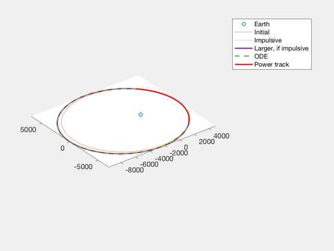
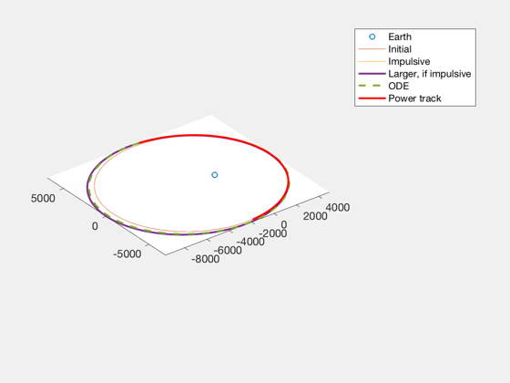
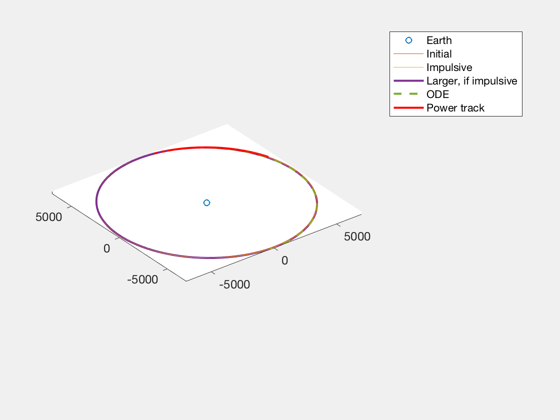
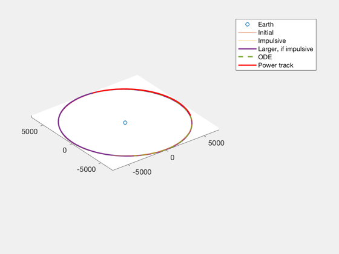

Finite burn duration arc loss demo
Examine two apoapsis raising burns, and two inclination change burns when the burns are performed over a finite duration.
See also ArcLossConstEls, ArcLossConstBurn, BurnTimesImpulsive
%-------------------------------------------------------------------------- % Copyright (c) 2019 Princeton Satellite Systems, Inc. % All rights reserved. %-------------------------------------------------------------------------- frame = OTFrame('Cartesian'); burnInList = [0 0.1 0 0;... 0 0.1 0 0;... 0 0 0.1 pi;... 0 0 0.1 pi]; accelList = [1e-4 5e-5 1e-4 5e-5]; e1List = [0.3 0.3 0 0]; for i = 1:4 e1 = e1List(i); el1 = [7000 0 0 0 e1 0]; burnIn = burnInList(i,:); accel = accelList(i); [dVOut,tDuration,burnOut] = ArcLossConstEls(el1,burnIn,accel,frame); fprintf('Impulsive took %.4g km/s of delta-V. Spread out over %.4g s, it took %.4g km/s. \n',norm(burnIn(1:3)),tDuration,dVOut) [~,~,elFImpulsive] = BurnTimesImpulsive(el1,burnIn,frame); [~,~,elFImpulsiveLarger] = BurnTimesImpulsive(el1,burnOut,frame); % Perform an ODE integration to recover the correct final elements [RDemo,VDemo] = El2RV([el1(1:5) el1(6)+2*pi*burnIn(4)]); rDemo = sqrt(sum(RDemo.^2,1)); rHatDemo = RDemo./rDemo; zHatDemo = cross(rHatDemo,VDemo,1); zHatDemo = zHatDemo./sqrt(sum(zHatDemo.^2,1)); tHatDemo = -cross(rHatDemo,zHatDemo,1); dVCartDemo = burnOut(1:3)'; dVRDemo = dot(dVCartDemo,rHatDemo,1); dVTDemo = dot(dVCartDemo,tHatDemo,1); dVZDemo = dot(dVCartDemo,zHatDemo,1); MsDemo = el1(6) + burnOut(4)*2*pi + [-1 1]*2*pi/Period(el1(1))*(tDuration/2); [x0,v0] = El2RV([el1(1:5) MsDemo(1)]); x0 = [x0;v0]; xODEOptions = odeset( 'AbsTol', 1e-13, 'RelTol', 1e-11 ); myF =@(t,x) FOrbCart(x,t,AccelVec(x(1:3),x(4:6),dVRDemo,dVTDemo,dVZDemo,accel)); % ode113 calls arguments in order (t,x) [~, xOde] = ode113( myF, [0 tDuration], x0, xODEOptions ); elFODE = RV2El(xOde(end,1:3)',xOde(end,4:6)'); disp([el1;elFImpulsive;elFImpulsiveLarger;elFODE]) % Plot all relevant orbits NewFig('Arc Loss Demo') plot3(0,0,0,'o'); hold on; axis equal [RPlot,VPlot] = RVFromKepler(el1); plot3(RPlot(1,:),RPlot(2,:),RPlot(3,:)); [RPlot,VPlot] = RVFromKepler(elFImpulsive); plot3(RPlot(1,:),RPlot(2,:),RPlot(3,:)); [RPlot,VPlot] = RVFromKepler(elFImpulsiveLarger); plot3(RPlot(1,:),RPlot(2,:),RPlot(3,:),'LineWidth',2); [RPlot,VPlot] = RVFromKepler(elFODE); plot3(RPlot(1,:),RPlot(2,:),RPlot(3,:),'--','LineWidth',2); plot3(xOde(:,1)',xOde(:,2)',xOde(:,3)','r','LineWidth',2) legend('Earth','Initial','Impulsive','Larger, if impulsive','ODE','Power track') end % for loop function out = AccelVec(R,V,dVR,dVT,dVZ,accel) r = sqrt(sum(R.^2,1)); rHatAccel = R./r; zHatAccel = cross(rHatAccel,V,1); zHatAccel = zHatAccel./sqrt(sum(zHatAccel.^2,1)); tHatAccel = -cross(rHatAccel,zHatAccel,1); out = (dVR*rHatAccel + dVT*tHatAccel + dVZ*zHatAccel)/norm([dVR dVT dVZ])*accel; end %--------------------------------------
Impulsive took 0.1 km/s of delta-V. Spread out over 1043 s, it took 0.1043 km/s.
Columns 1 through 3
7000 0 0
7263.62883782618 0 0
7275.48774350889 0 0
7263.39584717158 0 0
Columns 4 through 6
0 0.3 0
0 0.325406059505313 0
0 0.326505634708584 0
1.14733232164794e-05 0.322949145500648 0.531905609651401
Impulsive took 0.1 km/s of delta-V. Spread out over 2254 s, it took 0.1127 km/s.
Columns 1 through 3
7000 0 0
7263.62883782618 0 0
7298.7877869712 0 0
7257.48015175873 0 0
Columns 4 through 6
0 0.3 0
0 0.325406059505313 0
0 0.32865564214008 0
6.28306273356702 0.315678638638412 1.15101660526371
Impulsive took 0.1 km/s of delta-V. Spread out over 1051 s, it took 0.1051 km/s.
Columns 1 through 3
7000 0 0
7001.22951713529 0.0132511849154341 0.889652880639953
7000.00009872242 0.0139263955291732 0.889652880639953
6998.64282475281 0.013193669948712 0.889653711914626
Columns 4 through 6
0 0 0
0 0.000175614459186986 0
0 1.41032021715702e-08 0
3.1416029354882 0.000183713134390773 -2.57499095702905
Impulsive took 0.1 km/s of delta-V. Spread out over 2480 s, it took 0.124 km/s.
Columns 1 through 3
7000 0 0
7001.22951713529 0.0132511849154341 0.889652880639953
7000.00019149247 0.0164353674865365 0.889652880639953
6998.10990289226 0.0119577754990448 0.889655955722847
Columns 4 through 6
0 0 0
0 0.000175614459186986 0
1.49011611938477e-08 2.73560663024824e-08 -2.44929346428863e-16
3.14164139362526 0.000196495292006895 -1.80410755188002
   